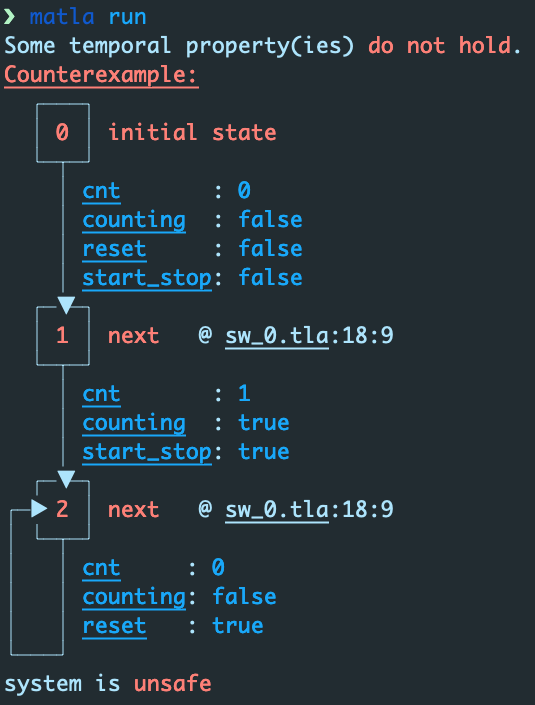

A manager for TLA projects
- By Adrien Champion, Keryan Didier, Steven de Oliveira, OCamlPro.
Matla is a manager for TLA+ projects written in Rust and pronounced like "matelas", which is French for "mattress". It is heavily inspired by cargo, the critically acclaimed Rust project manager.
This user manual assumes you are familiar with TLA+ and its associated verification engine TLC.
Matla is not a big project, it is inspired by cargo but nowhere near as complex or feature-packed. We develop matla with three things (a trifecta of sorts) in mind: safety (confidence in the code and thus the analysis), simplicity and ergonomics. This last aspect is not here for PR reasons: as heavy Rust users, we recognize how nice an experience it is to interact with a tool with readable, colored output, and where each interaction shows a great deal of care for user-friendliness.
There is a TLDR at the end of this file for crash course on using matla.
Matla is still very young. There are many issues to address; some of them have to do with quirks at TLC-level, others are just blind spots that we have not triggered yet in our use of matla. If you run into some of these problems, consider opening an issue to help us improve matla 😸
Main features currently implemented
Motivated in the next section and discussed in details in the rest of this document:
- retrieve/handle/update the TLA+ toolbox
tla2tool.jarbehind the scenes; - convenient automatic project initialization;
- deal with the files generated by TLC's analyses cleanly, in a
gitignoredtargetfolder where all compilation/run artifacts live; - allow users to have a global configuration (specifying TLC arguments such as
seed,difftrace, ...), (potentially/partially) overridden by the project configuration, (potentially/partially) overridden by command-line configuration (options); - handling integration tests in a directory that's distinct from the main source directory;
- debug assertions, i.e. assertions checked in
debugmode but compiled away inreleasemode (the mode is specified by users whenever they call matla, e.g.matla run --release); - modernized output with clearer error messages: very much WIP at the moment, most likely requires a collaboration with the TLC team;
- pretty, readable counterexample traces.
Features we are considering implementing soon-ish
Very strong emphasis on soon-ish:
- unit tests specified in TLA+ source files;
- documentation tests specified in comments in the TLA+ source files;
- documentation generation: the TLA+ toolbox can generate a very nice PDF of the sources using LaTeX, but on big projects the lack of hyperlinks, search bar, etc. can be quite frustrating. It is also not clear we can have documentation tests appear nicely in the documentation using TLA+ toolbox's documentation capabilities. Also, we are quite fond of markdown as a (code) documentation language given how simple and universal it has become (for better or worse);
Features we might consider at some point
- notion of dependency (library), most likely building on
git-based online services; - optional static type-checking: quite ambitious as it requires parsing, representing and manipulating (subsets of) the TLA+ language. Do not hold your breath.
TL;DR
-
install by retrieving the latest release or using cargo
cargo install https://github.com/OCamlPro/matla#latest -
setup, required unless you plan to run in portable mode (
matla --portable .../matla -p ...)matla setup -
initialize a project directory
matla init -
run
top.tla/top.cfgmatla run topor
matla runif there is only one.tla/.cfgpair in the project directory -
run tests (modules with
.tlaand.cfgfiles) in<proj_dir>/testsmatla test -
you will probably want to read about matla's user/project/cla configuration hierarchy
Motivation
Before matla and to the best of our knowledge, to compile and analyze ("run") TLA+ specifications ("programs") consisted in either running TLC manually in a terminal through the TLA+ toolbox java jar file, or to use the TLA+ toolbox IDE included in the TLA+ toolbox.
As frequent TLA+ developers, we write and maintain sizeable TLA+ codebases for formal specification and verification purposes in industrial and semi-industrial (R&D) projects. It is our humble opinion that the normal TLA+ workflow, i.e. calling TLC directly, does not handle various practical aspects such as dealing with a test suite. Testing, and in particular sanity checks, is very valuable to us since our final goal is usually to prove the safety of (the TLA+ encoding of) whatever system we're working on. Sanity checks and regression tests raise our confidence that the encoding is correct, the invariants and properties make sense, etc. and are crucial in our (and thus the client's) confidence in (dis)proving the safety of the actual system.
It quite obvious that TLC is not built to handle test suites and other project-level features such as the ones matla provides. TLC is akin to
gccor Rust'srustccompiler: it focuses on compiling and running, not managing a project. We are not criticizing TLC for lacking the features matla provides. Matla builds on top of TLC just like cargo builds on top of therustccompiler.
The next chapters go over installing matla, its main features and how to use them. Before that, let us go briefly over the core features we wanted in matla and why.
The first, basic feature we wanted matla to have is to deal with the TLA+ toolbox tla2tools.jar
(retrieve, handle, keep updated) to abstract it away from the user; much like cargo completely
abstracts away rustc. We also want the usual modern project manager comfort: initialize a project
with everything matla needs, automatically add the build directory to the .gitignore if one is
detected, etc.
The remaining main features are more involved and require more motivation, they are discussed in the remaining sections of this chapter. Feel free to skip to the next chapter if you do not need further motivating.
Motivation: conditional compilation
This is actually the main reason we started developing matla. If you are familiar with TLA+, you know it is a dynamically-typed language. Static typing, and especially static strong-typing, is basically a static analysis that makes sure (state) variables cannot store values of unexpected types. Dynamically-typed languages such as TLA+ are more flexible that statically-typed ones in that variables can end up storing anything as the program runs. Whenever a primitive operation is applied to a value, the runtime (TLC, here) checks the application is legal; if it is not, a runtime error is generated.
Many a TLA+ developer have issues with this aspect of TLA+. On one hand, static typing means the
program will not compile because someone stored a nonsensical value in a variable, which raises the
trust in the TLA+ code and thus the analysis and its outcome. Also, this means a lengthy analysis
(hours, days, or even weeks) cannot fail because, say, for some reason x in x + 1 happens to
store a string; meaning the bug must be fixed and the lengthy analysis must restart from scratch. On
the other hand, dynamic typing offers flexibility such as being able to build heterogeneous
lists/arrays.
Still, TLA+/TLC are what they are: dynamically-typed. As a consequence, static-typing fanatics like us tend to heavily annotate their TLA+ code with type-checking assertions. Typically, function definitions will start with a check that the arguments have the expected type to avoid potentially misleading errors such as "cannot compute length of integer" with a more or less relevant location.
Our TLA+ projects tend to have a lot of checks like these; especially since besides type-checking, one usually also checks for structural invariants of the encoding as those also greatly raise the trust in the relevance of any analysis.
While tedious at times, writing these assertions is a good exercise and we have little to no complaints about that. This does change when we run the final analysis however. All our assertions help us develop, sanity-check, debug, catch regressions... but we generally don't want them to run in the final analyses. On large projects, TLC's analyses can take very long; checking each assertion in this context might make sense for a few of them, but on the whole they tend to make analyses take much, much, much longer.
Hence, we want to have a mechanism for debug assertions, very similar to Rust's debug_assert
macros). Users should then be able to run
analyses (and tests!) in debug or release mode, with debug assertions only active in debug
and compiled away in release.
Motivation: Testing
As discussed previously, testing is mandatory as it raises significantly the confidence in the
encoding, the invariants and properties, and thus the final analysis and its outcome. We wanted
projects to have an optional tests directory, separated from the actual codebase, where sanity
checks, regression tests etc. can be. These tests are akin to integration tests; on the other
hand, unit tests should live in source files in the actual codebase using special syntax to be
compiled away in the final analysis/es. Documentation tests and compiling/running/checking them
would also be very useful, both as a means of documentation and for catching bugs.
Obviously, we want to be able to check tests against an expected result. Matla's tests needed to include a way for users to specify if the test is expected to succeed, fail at compile-time and how, or fail at run-time and how ---invariant violation, temporal violation, type-checking error, assertion failure etc.
Install, build, setup and portable mode
This chapter covers the basics of installing and building matla, as well as its initial (optional) setup.
Downloading a release
Probably the easiest way to use matla is to download the latest release at
Put it wherever is convenient for you, ideally in your $PATH, and you're good to go. Now, this
installation method is not great for updating matla as it requires manually checking whether a new
version is available. The following installation method is arguably more convenient in that regard.
Using cargo
Assuming you have Rust installed or are willing to install it, you can use cargo to handle matla's installation for you.
Now, matla is not published as a crates.io package. As such, Rust's usual
cargo install matla will not work; to install matla, please provide the repository's URL
explicitly as follows.
# Matla's official repository, *latest* release branch:
> cargo install https://github.com/OCamlPro/matla#latest
# Bleeding edge, most recent nightly version available in the *main* branch:
> cargo install https://github.com/OCamlPro/matla#main
# Or just:
> cargo install https://github.com/OCamlPro/matla
To update matla, simply run the same command with -f to force the update:
> cargo install -f https://github.com/...
Alternatively and if you are a frequent Rust flyer, consider using the extremely convenient
cargo-update cargo plugin that can update
outdated binary Rust crates for you.
Build from sources
Building matla from sources is quite easy and only requires Rust to be installed.
Simply clone the repository, change to whatever branch you want to build, and cargo build or
cargo build --release matla.
> git clone https://github.com/OCamlPro/matla
[...]
> cd matla
> git checkout [...]
[...]
# Maybe run tests to make sure everything's fine.
> cargo test
[...]
> cargo build --release
[...]
> ls target/release/matla
target/release/matla*
Move/symlink the resulting binary as you see fit and start writing TLA+ projects using matla!
Alternatively, run cargo install --path matla to have cargo handle compilation and putting the
binary in your path.
Setup and portable mode
At this point, you have a (hopefully recent) matla binary in your path.
> matla help
matla 0.1.0
Manager for TLA+ projects.
USAGE:
matla [FLAGS] [OPTIONS] [SUBCOMMAND]
FLAGS:
-p, --portable Infer toolchain from environment, load no user configuration
-v Increases verbosity, capped at 3
-h, --help Prints help information
-V, --version Prints version information
OPTIONS:
-c, --color <true|on|false|off> (De)activates colored output [default: on]
SUBCOMMANDS:
clean Cleans the current project: deletes the `target` directory.
help Prints this message or the help of the given subcommand(s)
init Initializes an existing directory as a matla project.
run Runs TLC on a TLA module in a project directory.
setup Performs this initial matla setup, required before running matla.
test Run the tests of a project.
tlc Calls TLC with some arguments.
uninstall Deletes your matla user directory (cannot be undone).
update Updates the `tla2tools` jar in the matla user directory.
Obviously, everything works out of the box:
> matla init
Error: have you run `matla setup` yet?
Caused by:
0: if you have, your user directory might be corrupted
1: just re-run `matla setup` to make sure
2: failed to load configuration
3: failed to load user configuration
4: failed to load file `~/.config/matla/matla.toml`
5: No such file or directory (os error 2)
except it actually does not. Matla does let us know some setup is needed and how to perform it, so let's discuss that.
By default, matla requires a setup step before running which we present below. This setup will create a directory where matla can store your user configuration which controls the underlying TLC configuration among other things. If that is not something you are comfortable with, do read the following sections as the last one discusses matla's portable mode which does not need any user configuration files/directories to be created.
Also, if at any point you want matla to remove all user configuration data you can simply run
matla uninstall. There is no functional difference with manually deleting matla's user
configuration directory, which we discuss next.
$HOME/.config/matla
Following modern unix-flavored conventions, matla's configuration directory is
$HOME/.config/matla.
For Windows users,
$HOMEis your user account'sDocumentsfolder. Well, we're a 100% almost sure it's probably that, but definitely do check just in case. And let us know if we were right if you feel like receiving our eternal (intangible) gratitude!
Previously, we ran matla init and caused matla to complain that we need to run matla setup.
Doing so causes matla to ask a few questions as we are going to see now, but you can check the
setup options with matla help setup if you already know the kind of setup you want.
> matla setup
|===| TLA+ toolchain setup
| Config will live in `~/.config/matla`, okay to create this directory? [Yn]
If you decide to answer no, then your only option is portable mode. Say we agree:
| y
|
| Matla can either:
| - retrieve the tla2tools jar from your environment, or
| - download it for you.
| Download the tla2tools to `~/.config/matla`? If not, matla will attempt to find it in your path [Yn]
Answering no at this point causes matla to look for the TLA+ toolbox in your path, and fail if it cannot find one. Having matla handle the toolbox for us is arguably more convenient, so let's do that:
| y
| Downloading toolbox from `https://github.com/tlaplus/tlaplus/releases/latest/download/tla2tools.jar`...
| Download completed successfully.
| Writing downloaded file to `~/.config/matla/tla2tools.jar`...
Nice, the TLA+ toolbox is now in the matla user configuration directory. Matla's setup is done at this point, right after it displays the contents of your user (default, here) configuration file:
|
| Writing configuration file to user directory, its content is:
|
| ```
| [config]
| tla2tools = '/Users/adrien/.config/matla/tla2tools.jar'
| [tlc_cla]
| # # Full configuration for TLC runtime arguments customization
| #
| # # Sets the number of workers, `0` or `auto` for `auto`.
| # workers = 'auto' # <int|'auto'>#
| # # If active, counterexample traces will only display state variables when they change.
| # diff_cexs = 'on' # <'on'|'off'|'true'|'false'>#
| # # Sets the seed when running TLC, random if none.
| # seed = 0 # <int|'random'>#
| # # If active, TLC will not output print statements.
| # terse = 'off' # <'on'|'off'|'true'|'false'>#
| # # Maximum size of the sets TLC is allowed to enumerate.
| # max_set_size = 'default' # <u64|'default'>#
| # # If active, TLC will check for (and fail on) deadlocks.
| # check_deadlocks = 'on' # <'on'|'off'|'true'|'false'>#
| # # If active, matla will present the callstack on errors, whenever possible.
| # print_callstack = 'off' # <'on'|'off'|'true'|'false'>#
| # # If active, matla will present time statistics during runs.
| # print_timestats = 'on' # <'on'|'off'|'true'|'false'>
| ```
|
| Configuration regarding `tlc_cla` (TLC command-line arguments) corresponds to
| options for `matla run`. You can check them out with `matla help run`.
| The configuration above corresponds to matla's defaults, and all items are optional.
|
| Setup complete, matla is ready to go.
|===|
If you are familiar with TLC, you probably see right away what the [tlc_cla] TOML-section deals
with. It specifies your user-level TLC options; we will see later that this is a first level of
configuration, the other two being project-level configuration (a TOML file in your project
directory) and command-line-level configuration (options passed to matla run). Basically, your
user-level configuration is always used except for options specified in the project-level
configuration, except for options specified at command-line level.
You can uncomment any of the items in this file, change them, and thus decide what the default behavior of TLC (through matla) should be. Just keep in mind that project configuration can preempt these settings, as can matla's command-line arguments.
We also see that your user configuration file stores the path to the TLA+ toolbox, which is the
jar downloaded during setup. If you had asked matla not to download it but instead retrieve it
from the environment, then assuming it found some/path/tla2tools.jar somewhere that's what the
value of the tla2tools item of the configuration file would be.
At this point everything is in place and you can move on to the next chapters of this manual. The section below is for users that do not want matla to create a user configuration directory for some reason.
Portable mode
Some readers might not like this "hidden configuration directory" approach and prefer a
portable solution, where matla has no such impact on your home directory. Although it is not
the intended way to use matla, such readers will be glad to know they can run matla in portable
mode with the --portable (-p for short) flag.
In portable mode, matla does not look for $HOME/.config/matla (which would fail) and instead
scans the environment it's running in (mostly your $PATH environment variable) for
tla2tools.jar. Assuming it finds one, matla will just use that and run normally. Obviously,
running in portable mode means you will not be able to have a user configuration file.
Init and project layout
Matla project sources for this section available here.
Let's dive in on an non-matla TLA+ toy project. From this point, we assume you have performed matla's setup.
> ls -a
.gitignore sw_0.cfg sw_0.tla
> bat .gitignore
───────┬────────────────────────────────────────────────────────────────────────
│ File: .gitignore
───────┼────────────────────────────────────────────────────────────────────────
1 │ # Ignore macos trash files
2 │ .DS_Store
───────┴────────────────────────────────────────────────────────────────────────
For the sake of reproducibility, here is the content of the .tla file. It encodes a stopwatch
(sw) system counting time with cnt, featuring reset and start_stop buttons, and an
"internal" counting flag. The counter saturates at 59.
\* sw_0.tla
---- MODULE sw_0 ----
LOCAL INSTANCE Integers
VARIABLES cnt, reset, start_stop, counting
svars == <<cnt, reset, start_stop, counting>>
bool(stuff) == stuff \in { TRUE, FALSE }
init ==
bool(reset)
/\ bool(start_stop)
/\ (cnt = 0)
/\ (counting = start_stop)
next ==
bool(reset')
/\ bool(start_stop')
/\ (
IF start_stop' THEN counting' = ~counting
ELSE UNCHANGED counting
) /\ (
IF reset' THEN cnt' = 0
ELSE IF counting' /\ cnt < 59 THEN cnt' = cnt + 1
ELSE UNCHANGED cnt
)
inv_cnt_pos == cnt >= 0
inv_reset == reset => (cnt = 0)
cnt_leq_10 == cnt <= 10
====
And the .cfg file:
\* sw_0.cfg
INIT init
NEXT next
INVARIANTS
inv_cnt_pos
inv_reset
Init and project configuration
At this point, our toy project is
> exa -a
.gitignore sw_0.cfg sw_0.tla
> bat .gitignore
───────┬────────────────────────────────────────────────────────────────────────
│ File: .gitignore
───────┼────────────────────────────────────────────────────────────────────────
1 │ # Ignore macos trash files
2 │ .DS_Store
───────┴────────────────────────────────────────────────────────────────────────
Time to matla-ify this project, which is done with matla init.
> matla init
Setting up your project, hang tight.
- adding build directory to gitignore if needed...
- setting up `Matla` module...
- setting up project configuration file...
Init complete, your project is ready to roll.
> exa -a
.gitignore Matla.tla Matla.toml sw_0.cfg sw_0.tla
We have two new files, but before we discuss them let's adress the .gitignore: in its output,
matla lets us know that it added its "build directory" to the gitignore if needed, meaning if
one exists and the build directory is not already there".
> bat .gitignore
───────┬────────────────────────────────────────────────────────────────────────
│ File: .gitignore
───────┼────────────────────────────────────────────────────────────────────────
1 │ # Ignore macos trash files
2 │ .DS_Store
3 │
4 │ # Ignore matla build directory.
5 │ /target
───────┴────────────────────────────────────────────────────────────────────────
Lines 3 to 5 are new and add /target as a directory to ignore. As we will see later, this
directory will be where matla puts all its compilation/runtime artifacts.
Project layout
Matla project sources for this section available here.
Diving deeper, let's look at matla's project configuration file, Matla.toml:
[project]
# # Full configuration for TLC runtime arguments customization
#
# # Sets the number of workers, `0` or `auto` for `auto`.
# workers = 0 # <int|'auto'>#
# # If active, counterexample traces will only display state variables when they change.
# diff_cexs = 'on' # <'on'|'off'|'true'|'false'>#
# # Sets the seed when running TLC, random if none.
# seed = 0 # <int|'random'>#
# # If active, TLC will not output print statements.
# terse = 'off' # <'on'|'off'|'true'|'false'>#
# # Maximum size of the sets TLC is allowed to enumerate.
# max_set_size = 'default' # <u64|'default'>#
# # If active, TLC will check for (and fail on) deadlocks.
# check_deadlocks = 'on' # <'on'|'off'|'true'|'false'>#
# # If active, matla will present the callstack on errors, whenever possible.
# print_callstack = 'off' # <'on'|'off'|'true'|'false'>#
# # If active, matla will present time statistics during runs.
# timestats = 'off' # <'on'|'off'|'true'|'false'>
If you remember, this is pretty much exactly what matla generates on setup as your user configuration file. While users can customize how they want TLC to behave (when calling matla) in their user configuration file, the project-level configuration can override part or all of these settings. This can be useful to make sure all contributors use the same TLC-level settings regardless of their user configuration such as seed, deadlock checking, etc. if that makes sense for your project.
The Matla module
The last file matla init generated is the Matla.tla file. This defines a Matla module which is
~385 lines long. Basically, this module provides functions for asserting things, i.e. wrappers
around calls to TLC!Assert as well as a few type-checking helpers. For clarity's sake, let's
discuss only one of the many assert variants.
> bat -p Matla.tla
---- MODULE Matla ----
\* Matla helpers, mostly for assertions and debug/release conditional compilation.
\* TLC!Assertions are built on top of the standard `TLC' module.
LOCAL TLC == INSTANCE TLC
---- MODULE dbg ----
\* All functions in this module do nothing in `release' mode.
\* Checks some predicate.
assert(
\* Predicate that must be true.
pred,
\* Message issued when the predicate is false.
message
) ==
TLC!Assert(pred, message)
====
\* End of module `dbg'.
\* Contains debug-only functions.
dbg == INSTANCE dbg
\* Checks some predicate.
\*
\* Active in debug and release.
assert(
\* Predicate that must be true.
pred,
\* Message issued when the predicate is false.
message
) ==
TLC!Assert(pred, message)
====
\* End of module `Matla'.
This might be a bit odd: there are two versions of assert with exactly the same definition, but
one is in a dbg module under Matla while the other is at Matla's top-level. The same goes for
all assert variants in the actual Matla.tla.
You can infer why this is by reading the comments, but basically it is tied to matla's conditional
compilation capabilities. As discussed earlier and detailed after, matla can run in either debug
mode or release mode. If, somewhere, we write Matla!assert(...) then regardless of the mode
matla runs in, the assertion will be evaluated and our run will crash if the assertion does not
hold.
Matla!dbg!assert(...) is the same but only in debug mode. In release mode, matla will compile
it away (use TRUE as its definition) to make your big, release-run faster.
Technically, matla does not need to write this
Matla.tlafile here. It is actually ignored when matla runs, as matla generates whatever version correspond to the run mode (debug/release). The reason matla does generate this file is i) so that users can actually check what's in it and ii) to be compatible with IDEs that rely on the TLA+ toolbox to check your files and display errors if needed. GeneratingMatla.tlahere essentially makes your code a legal TLC project.
Some matla users might not be interested in this conditional compilation feature. A quick look at
matla help init will lead you to the --no_matla_module flag which will do exactly what it
sounds like it's doing.
Tests
Matla also recognizes the optional tests project sub-directory: this is where your integration
tests will reside. Let's forget about this for now as we will discuss testing in details
later.
Running
This chapter builds on the toy project discussed in the previous chapter. It might be useful to be familiar with it, especially if this is your first time reading this.
Also, all demos run with an unmodified
Matla.tomlproject configuration file.
Running matla on your matla-initialized TLA+ project is easy enough:
> ls
Matla.tla Matla.toml sw_0.cfg sw_0.tla
> matla run
system is safe
> ls
Matla.tla Matla.toml sw_0.cfg sw_0.tla target
Matla project sources for this section available here.
That's a bit underwhelming, though we did get a safe result. This means all invariants/properties
were proved to hold by TLC (called through matla). There is a new target folder which is where
all build-time/run-time artifact live. Feel free to check out its content if you're interested in
peeking at how matla handles your sources and runs TLC on them. Also, note that you can clean your
project directory with matla clean. This is effectively the same as rm -rf target. Note that
matla run does not create or modify anything outside target, hence the simple cleanup
procedure.
Moving on, let's take a look at the .cfg file.
INIT init
NEXT next
INVARIANTS
inv_cnt_pos
inv_reset
It turns out there was two invariants to check.
> bat -r 29:32 sw_0.tla
───────┬────────────────────────────────────────────────────────────────────────
│ File: sw_0.tla
───────┼────────────────────────────────────────────────────────────────────────
29 │ inv_cnt_pos == cnt >= 0
30 │ inv_reset == reset => (cnt = 0)
31 │
32 │ cnt_leq_10 == cnt <= 10
───────┴────────────────────────────────────────────────────────────────────────
Both are expected to hold, which TLC confirms. Next, we'll add some falsifiable invariants/properties to see what happens.
Running: counterexample traces
Matla project sources for this section available here and here (temporal version).
Remember the candidate invariants from our running example:
> bat -r 29:32 sw_0.tla
───────┬────────────────────────────────────────────────────────────────────────
│ File: sw_0.tla
───────┼────────────────────────────────────────────────────────────────────────
29 │ inv_cnt_pos == cnt >= 0
30 │ inv_reset == reset => (cnt = 0)
31 │
32 │ cnt_leq_10 == cnt <= 10
───────┴────────────────────────────────────────────────────────────────────────
Predicate cnt_leq_10 does not hold: the stopwatch can count up to 59, at which points it
cannot increase anymore.
Let's see what happens if we add it as a candidate invariant.
> bat sw_0.cfg
───────┬────────────────────────────────────────────────────────────────────────
│ File: sw_0.cfg
───────┼────────────────────────────────────────────────────────────────────────
1 │ INIT init
2 │ NEXT next
3 │
4 │ INVARIANTS
5 │ inv_cnt_pos
6 │ inv_reset
7 │ cnt_leq_10
───────┴────────────────────────────────────────────────────────────────────────
This is a good opportunity to showcase matla's fancy, colored, UTF-8-art output so let's see what it looks like on a screenshot.

For whatever reason, some people don't like command-line tools that have nice colored output. Note
that matla has a --color option: matla --color off run or matla -c off run which disables
matla's colored output.
This toy example is still readable in colorless mode, but counterexample traces on projects manipulating tuples, bags, sets... values benefit greatly from syntax highlighting. Here is a very small part of a huge counterexample trace for a relatively big project:

For readers wondering what a counterexample trace for a temporal property looks like, let's add the
bogus temporal property that "if cnt = 1 at some point, then eventually cnt = 10". Which, if
you followed, should not hold.
> bat -r 29:34 sw_0.tla
───────┬────────────────────────────────────────────────────────────────────────
│ File: sw_0.tla
───────┼────────────────────────────────────────────────────────────────────────
29 │ inv_cnt_pos == cnt >= 0
30 │ inv_reset == reset => (cnt = 0)
31 │
32 │ cnt_leq_10 == cnt <= 10
33 │
34 │ well_thats_gonna_fail == (cnt = 1) ~> (cnt = 10)
───────┴────────────────────────────────────────────────────────────────────────
Then we activate the property in the .cfg:
INIT init
NEXT next
INVARIANTS
inv_cnt_pos
inv_reset
PROPERTIES
well_thats_gonna_fail
And voilà:

User/project configuration and command-line arguments
This chapter builds on the toy project discussed in the previous chapter. It might be useful to be familiar with it, especially if this is your first time reading this.
As discussed in the previous chapter, matla has a three-level configuration hierarchy.
- 1) user configuration:
$HOME/.config/matla/matla.toml(none in--portable/-pmode); - 2) project configuration:
project/directory/Matla.toml; - 3) command-line arguments passed to
matla runcalls.
Basically, for any configuration item, matla run uses the value set by the highest configuration
level in this hierarchy; if none, then the item's internal default value is used.
Let's see this in action. Say that, as a user, you wish the TLC-level seed controling TLC's RNG to
be random (matla's default is auto) and you want exhaustive counterexample traces (off by
default).
Exhaustive traces display all state variables for all states. Diff traces on the other hand show the value of state variable
svarin states_iif either
i = 0,s_iis the last state of the trace, orsvar's value ins_iis different from its value ins_{i-1}.
To set this configuration, modify your user configuration file:
> bat ~/.config/matla/matla.toml
──────┬────────────────────────────────────────────────────────────────────────
│ File: ~/.config/matla/matla.toml
──────┼────────────────────────────────────────────────────────────────────────
1 │ [config]
2 │ tla2tools = '~/.config/matla/tla2tools.jar'
3 │
4 │ [tlc_cla]
5 │ seed = 'random'
6 │ diff_cexs = 'off'
7 │
──────┴────────────────────────────────────────────────────────────────────────
Going back to our running stopwatch example, we launch matla run again but this time ask it to
print its TLC-level configuration.
> exa
Matla.tla Matla.toml sw_0.cfg sw_0.tla target
> bat sw_0.cfg
───────┬────────────────────────────────────────────────────────────────────────
│ File: sw_0.cfg
───────┼────────────────────────────────────────────────────────────────────────
1 │ INIT init
2 │ NEXT next
3 │
4 │ INVARIANTS
5 │ inv_cnt_pos
6 │ inv_reset
───────┴────────────────────────────────────────────────────────────────────────
> bat Matla.toml
───────┬────────────────────────────────────────────────────────────────────────
│ File: Matla.toml
───────┼────────────────────────────────────────────────────────────────────────
1 │ [project]
2 │ # # Full configuration for TLC runtime arguments customization
3 │ #
4 │ # # Sets the number of workers, `0` or `auto` for `auto`.
5 │ # workers = 0 # <int|'auto'>#
6 │ # # If active, counterexample traces will only display state variables when they change.
7 │ # diff_cexs = 'on' # <'on'|'off'|'true'|'false'>#
8 │ # # Sets the seed when running TLC, random if none.
9 │ # seed = 0 # <int|'random'>#
10 │ # # If active, TLC will not output print statements.
11 │ # terse = 'off' # <'on'|'off'|'true'|'false'>#
12 │ # # Maximum size of the sets TLC is allowed to enumerate.
13 │ # max_set_size = 'default' # <u64|'default'>#
14 │ # # If active, TLC will check for (and fail on) deadlocks.
15 │ # check_deadlocks = 'on' # <'on'|'off'|'true'|'false'>#
16 │ # # If active, matla will present the callstack on errors, whenever possible.
17 │ # print_callstack = 'off' # <'on'|'off'|'true'|'false'>#
18 │ # # If active, matla will present time statistics during runs.
19 │ # timestats = 'off' # <'on'|'off'|'true'|'false'>
───────┴────────────────────────────────────────────────────────────────────────

The configuration reported by matla is the expected one: everything is default since the project
configuration and matla run's command-line arguments do not specify anything.
Say now that the project leader wants to fix TLC's seed and fix the number of workers to 1
(matla's default is 'auto') to have (more) reproducible analyses output. So, they modify the
project's configuration:
> bat Matla.toml
───────┬────────────────────────────────────────────────────────────────────────
│ File: Matla.toml
───────┼────────────────────────────────────────────────────────────────────────
1 │ [project]
2 │ seed = 0
3 │ workers = 1
───────┴────────────────────────────────────────────────────────────────────────
Let's run matla again:

As expected, the seed configuration item set by your user configuration is overwritten by the
project's configuration, while your diff_cexs item is still the way you set it up. Item workers
is not an override since you did not specify it in your user configuration file, it's just the
setting specified by the project.
Last, let's assume you're tired of your analyses taking forever because the project configuration
forces TLC to use a single worker, causing you to hate your project leader. You thus override the
workers item in you call to matla:

Neat! You can now bypass your project leader's setup without them ever knowing about it.
Debug/release: conditional compilation
This chapter builds on the toy project discussed in the previous chapter. It might be useful to be familiar with it, especially if this is your first time reading this.
Matla's conditional compilation is tied to the Matla module discussed in the previous
chapter. If you remember, Matla.tla is generated by
matla init among your project's sources.
Just like we did back then, let's pretend this module only defines assert and none of its
variants, all of which are handled the same by matla's conditional compilation anyway.
> cat Matla.tla
---- MODULE Matla ----
\* Matla helpers, mostly for assertions and debug/release conditional compilation.
\* TLC!Assertions are built on top of the standard `TLC' module.
LOCAL TLC == INSTANCE TLC
---- MODULE dbg ----
\* All functions in this module do nothing in `release' mode.
\* Checks some predicate.
assert(
\* Predicate that must be true.
pred,
\* Message issued when the predicate is false.
message
) ==
TLC!Assert(pred, message)
====
\* End of module `dbg'.
\* Contains debug-only functions.
dbg == INSTANCE dbg
\* Checks some predicate.
\*
\* Active in debug and release.
assert(
\* Predicate that must be true.
pred,
\* Message issued when the predicate is false.
message
) ==
TLC!Assert(pred, message)
====
\* End of module `Matla'.
The two versions, Matla!assert and Matla!dbg!assert, behave exactly the same in debug mode,
which is matla run's default mode. They differ in release mode however, activated by matla run --release, in that Matla!dbg!asserts will be compiled away (replaced by TRUE) while
Matla!asserts will still cause TLC to check them, and fail if they do not hold.
Let's illustrate this on our running stopwatch project, sources available here.
> exa
Matla.tla Matla.toml sw_0.cfg sw_0.tla target
> bat sw_0.cfg
───────┬────────────────────────────────────────────────────────────────────────
│ File: sw_0.cfg
───────┼────────────────────────────────────────────────────────────────────────
1 │ INIT init
2 │ NEXT next
3 │
4 │ INVARIANTS
5 │ inv_cnt_pos
6 │ inv_reset
───────┴────────────────────────────────────────────────────────────────────────
Module sw_0 defines a next action:
> bat -r 17:27 sw_0.tla
───────┬────────────────────────────────────────────────────────────────────────
│ File: sw_0.tla
───────┼────────────────────────────────────────────────────────────────────────
17 │ next ==
18 │ bool(reset')
19 │ /\ bool(start_stop')
20 │ /\ (
21 │ IF start_stop' THEN counting' = ~counting
22 │ ELSE UNCHANGED counting
23 │ ) /\ (
24 │ IF reset' THEN cnt' = 0
25 │ ELSE IF counting' /\ cnt < 59 THEN cnt' = cnt + 1
26 │ ELSE UNCHANGED cnt
27 │ )
───────┴────────────────────────────────────────────────────────────────────────
Let's add a non-debug check that we expect to fail:
> bat -r 17:29 sw_0.tla
───────┬────────────────────────────────────────────────────────────────────────
│ File: sw_0.tla
───────┼────────────────────────────────────────────────────────────────────────
17 ~ │ LOCAL Matla == INSTANCE Matla
18 │ next ==
19 │ bool(reset')
20 │ /\ bool(start_stop')
21 + │ /\ Matla!assert(reset')
22 │ /\ (
23 │ IF start_stop' THEN counting' = ~counting
24 │ ELSE UNCHANGED counting
25 │ ) /\ (
26 │ IF reset' THEN cnt' = 0
27 │ ELSE IF counting' /\ cnt < 59 THEN cnt' = cnt + 1
28 │ ELSE UNCHANGED cnt
29 │ )
───────┴────────────────────────────────────────────────────────────────────────
Running matla again, we get
Error: an assertion failed with "that's probably going to fail"
- triggered at
module sw_0, 20:8 → 20:60
| vvvvvvvvvvvvvvvvvvvvvvvvvvvvvvvvvvvvvvvvvvvvvvvvvvvvv
20 | /\ Matla!assert(reset', "that's probably going to fail")
|
- while exploring this trace
┌───┐
│ 0 │ initial state
└─┬─┘
│ cnt : 0
│ counting : false
│ reset : false
│ start_stop: false
┴
specification is unsafe
Let's make sure debug/release modes work for Matla!dbg!assert. Project sources available
here.
> bat -r 17:29 sw_0.tla
───────┬────────────────────────────────────────────────────────────────────────
│ File: sw_0.tla
───────┼────────────────────────────────────────────────────────────────────────
17 │ LOCAL Matla == INSTANCE Matla
18 │ next ==
19 │ bool(reset')
20 │ /\ bool(start_stop')
21 ~ │ /\ Matla!dbg!assert(reset')
22 │ /\ (
23 │ IF start_stop' THEN counting' = ~counting
24 │ ELSE UNCHANGED counting
25 │ ) /\ (
26 │ IF reset' THEN cnt' = 0
27 │ ELSE IF counting' /\ cnt < 59 THEN cnt' = cnt + 1
28 │ ELSE UNCHANGED cnt
29 │ )
───────┴────────────────────────────────────────────────────────────────────────
Running in debug mode (without --release) should still fail:
> matla run -w 1
Error: an assertion failed with "that's probably going to fail"
- triggered at
module sw_0, 20:8 → 20:64
| vvvvvvvvvvvvvvvvvvvvvvvvvvvvvvvvvvvvvvvvvvvvvvvvvvvvvvvvv
20 | /\ Matla!dbg!assert(reset', "that's probably going to fail")
|
- while exploring this trace
┌───┐
│ 0 │ initial state
└─┬─┘
│ cnt : 0
│ counting : false
│ reset : false
│ start_stop: false
┴
specification is unsafe
Running in release mode should succeed however, since besides the assertion line 21 the
specification is safe:
> matla run -w 1 --release
specification is safe
Testing
As developers, (doc/unit/integration/binary) testing is the main way we convince ourselves that our code does what we expect. At least until we all develop in lean or something similar.
Formal methods in general and formal specification and verification in particular exist to provide strong, proof-based guarantees. It is thus crucial to make sure the specification makes sense and behaves the way we want it to so that successful analyses actually mean something.
Currently, matla only supports integration testing. That is, tests that reside outside of your
project sources in a separate tests folder. Documentation/unit testing on the other hand would
typically live among your project's code. Matla does not support those just yet as, for now,
matla's design makes sure that your matla-project's sources are compatible with TLC: you can just
run TLC manually just like you would on any TLA+ codebase. This will probably change eventually,
but for now this constraint makes it difficult to decide exactly what the best way to provide
doc/unit testing is.
Plain tests
When we discussed project layout, we briefly mentioned that matla recognizes an
optional tests project sub-directory but postponed discussing it further. Until now, that is.
Let's focus on success-tests for now, meaning tests that are expected to compile and run without failing in any way: no assertion failure, dynamic type errors, invariant/property falsification, etc.
As you might expect, matla treats any test in tests as a success-test by default. We will see
later how to handle tests that should fail (assertion, falsification...).
A matla test is a regular TLA+ module tests/my_test.tla along with a cfg file
tests/my_test.cfg. Any TLA+ module in tests has access to all modules and can freely refer to
any/all of them as if they were in the same directory.
⚠ Since tests and sources live in the same moral namespace, test modules cannot have the same name as one of the module in your project's sources.
In fact, matla handles tests by creating a temporary directory in the project's
targetbuild directory and moving all your sources and the specific test you're running there before running TLC. Hence the potential name-clashes.
Let's create some tests in some matla project. As far as this section is concerned, it can be any
project as long as it does not have tests, including an empty (but initialized) project. You can
retrieve the full project here.
> exa
Matla.tla Matla.toml tests
We write a few tests
> exa --tree tests
tests
├── encoding_1.cfg
├── encoding_1.tla
├── encoding_2.cfg
├── encoding_2.tla
├── runtime_1.cfg
└── runtime_1.tla
that morally test some (nonexistent, here) encoding and runtime module from our project. They
can contain anything for this demo, as long as running does not fail. We decided to have all tla
(cfg) contain the same code, respectively.
\* tests/encoding_1.tla
---- MODULE encoding_1 ----
LOCAL INSTANCE Integers
VARIABLES cnt
init ==
cnt = 0
next ==
cnt' = (
IF cnt < 10 THEN cnt + 1 ELSE cnt
)
cnt_pos == cnt >= 0
====
\* tests/encoding_1.cfg
INIT init
NEXT next
INVARIANTS
cnt_pos
To run the tests, we simply run matla test. Note that this will run tests in debug mode.
Unsurprisingly, you can run them in release mode with matla test --release.
> matla test
running 3 integration tests sequentially
test `/encoding_2`: success 😺
test `/encoding_1`: success 😺
test `/runtime_1`: success 😺
integration tests: 3 successful of 3
⚠ If you have a
tests/my_test.tlawith no associatedcfgfile, matla will assume you wrote atlafor a test but forgot to write itscfgand produce an error.Well, actually, you can have modules with no
cfg, called "test libraries", but they require an annotation to let matla know you actually meant for this module to be a library used by other tests. We will see how shortly.
Sometimes, especially when we write a specific test, we don't want to run all tests. You can run a
single test by passing its module name (with or without .tla) to matla test.
> matla test encoding_1
running 1 integration test
test `/encoding_1`: success 😺
integration tests: 1 successful of 1
But what about a family of tests? Say we modified the (nonexistent, here, again) encoding module
from the project and only want to run test dealing with this module for instance; it turns out that
matla test accepts more than a module name, it supports regular expressions too:
> matla test "encoding_*"
running 2 integration tests sequentially
test `/encoding_2`: success 😺
test `/encoding_1`: success 😺
integration tests: 2 successful of 2
While different from a semantic analysis checking which test references which module, you can accomplish the same result assuming you have some discipline in your test naming convention.
⚠ Pro tip: matla does not look for a full match of the regular expression, just a partial one. Hence, you can also obtain the result from above by running the following.
> matla test encoding
running 2 integration tests sequentially
test `/encoding_2`: success 😺
test `/encoding_1`: success 😺
integration tests: 2 successful of 2
Test configuration and expected outcome
The ability to write tests that will be checked for success is not enough, in practice many tests check that something bad is rejected. Matla does support this, in fact you can specify that you expect pretty much any kind of outcome TLC can produce.
Matla lets you specify this by parsing an optional TOML test specification before the module header
of your test tla file. As you may know, TLC ignores everything before the module header (and after
the module footer), which allows us to write our test specification without making the file illegal
for TLC.
We did not do anything of the sort in the previous section because we wrote tests expected to
succeed, which is what matla assumes if we omit the test specification TOML header. Let's make the
default specification explicit: it takes the form of a [test] TOML section containing a few
fields. Full project available here.
\* tests/encoding_1.tla
[test]
only_in = none
expected = success
---- MODULE encoding_1 ----
LOCAL INSTANCE Integers
VARIABLES cnt
init ==
cnt = 0
next ==
cnt' = (
IF cnt < 10 THEN cnt + 1 ELSE cnt
)
cnt_pos == cnt >= 0
====
The first field is only_in, which specifies whether the test should only run in debug mode or
release mode. If you recall, matla test runs tests in debug mode while matla test --release
runs them in release mode. Here, none means that the test should run in both debug and release,
which is the same as omitting the only_in field completely. Besides none, only_in's value can
be debug or release.
This can be useful to make sure that your type-checking assertions are present and correct. Such
checks are typically Matla!dbg!assertions, which would fail if included in a matla test --release run as debug assertions are compiled away in release mode. Conversely, some of your
tests might be expensive enough that you don't want type-checking assertions to be active to save
time, so you would have `only_in = .
Next is the last, more interesting field: expected. Note that its value can optionally be quoted,
e.g. "success". Matla supports a relatively wide range of values. It's not necessary for you to
remember them all; instead, we advise you write a definitely illegal value such as help me. This
will cause matla test to fail parsing the value and produce a detailed explanation.
\* tests/encoding_2.tla
[test]
expected = help me
---- MODULE encoding_2 ----
LOCAL INSTANCE Integers
VARIABLES cnt
init ==
cnt = 0
next ==
cnt' = (
IF cnt < 10 THEN cnt + 1 ELSE cnt
)
cnt_pos == cnt >= 0
====
The explanation actually goes over most of what we saw in this section:
> matla test encoding_2
Error: failure during test
Caused by:
0: failed to load integration tests
1: illegal test configuration in file `./tests/encoding_2.tla` at 2:12
2: |
2 | expected = help me
| ^~~~~~ expected one of "Error", "Failure", "Violation", "error", "failure", "success", "violation"
3: Integration tests live in the optional `tests` directory of your project. A test is a *runnable* TLA
module, *i.e.* a TLA file and its companion `.cfg` file.
TLA integration test files must start with a test *configuration*, before the `----` module header.
The configuration is written in toml and looks as follows, **inside** the code block.
```toml
[test]
only_in = <'none'|'debug'|'release'>
expected = <result>
```
where `only_in` is optional and `none` by default; `expected` is also
optional and is `success` by default. Its value must be one of
- `success`
- `violation(assumption)`
- `violation(deadlock)`
- `violation(safety)`
- `violation(liveness)`
- `violation(assert)`
- `failure(spec)`
- `failure(safety)`
- `failure(liveness)`
- `error(spec_parse)`
- `error(config_parse)`
- `error(statespace_too_big)`
- `error(system)`
It seems to us that matla does a pretty good job at explaining how to write the test's
configuration and the expected field in particular, so we elaborate no further.
Test libraries
It can be quite useful to factor test-related boilerplate code for DRY's sake. Moving this common code to your project's sources is an option, but it's not a desirable one. It mixes testing and actual sources in a way that's just dirty and unhygienic.
We discussed previously that matla treats tla files in tests that have no associated cfg file
as mistakes: tests you wrote the tla for, but forgot the cfg because you got distracted by a
hilarious cat meme 🙀.
Still, that's exactly what matla's test libraries are, with the caveat that they must have a
TOML test library configuration header. Just like tests, this header must be before the TLA+ module
opener. Unlike tests that specify their configuration with a [test] TOML section containing a few
fields, test libraries are configured with a [lib] TOML section with no fields, at least
currently.
As matla runs your tests, there is no real difference between a test [lib]rary and a module from
your project's actual sources. Your tests see and can refer to both of them transparently. The only
difference is the [lib] header, which TLC ignores, and the fact that test libraries are located
in tests. Hygiene all the way!
Let's illustrate this on the example from the previous section. We factor out the initialization of
the cnt state variable in all of our tests. You can retrieve the full project
here.
\* tests/cnt_init.tla
\* does **not** have a `.cfg` file
[lib]
---- MODULE cnt_init ----
doit(cnt) == cnt = 0
====
\* tests/encoding_1.tla
[test]
expected = success
---- MODULE encoding_1 ----
LOCAL INSTANCE Integers
LOCAL cnt_init == INSTANCE cnt_init
VARIABLES cnt
init ==
cnt_init!doit(cnt)
next ==
cnt' = (
IF cnt < 10 THEN cnt + 1 ELSE cnt
)
cnt_pos == cnt >= 0
====
Our two other tests, encoding_2 and runtime_1, have exactly the same content as encoding_1.
Matla does not even blink and handles everything gracefully as usual:
> matla test
running 3 integration tests sequentially
test `/encoding_2`: success 😺
test `/encoding_1`: success 😺
test `/runtime_1`: success 😺
integration tests: 3 successful of 3